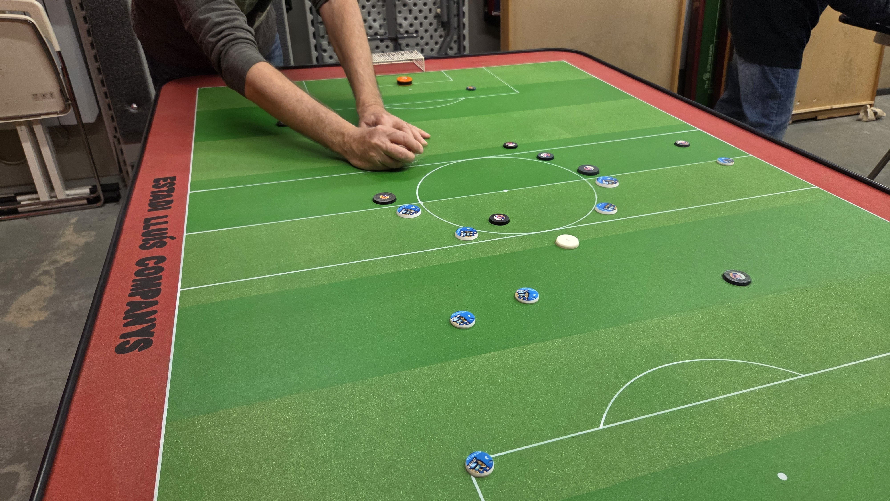
Futbol
botons
L'esport de taula català que combina precisió, tàctica i passió per la competició.
Descobreix l'esport, la seva història, els clubs que el mantenen viu i on el pots practicar avui.
Un esport de taula
amb identitat pròpia
El futbol botons és un esport de saló d'habilitat, concentració i sentit tàctic, practicat damunt d'un camp de taula amb botons, pilota i porteries. Amb jugadors i jugadores de totes les edats i presència internacional, és una pràctica amb tècnica, reglament i comunitat pròpia.
Perquè barreja l'emoció del futbol amb l'habilitat manual, la concentració i el gust pel detall. Un esport de competició obert a tothom, sense límit d'edat.
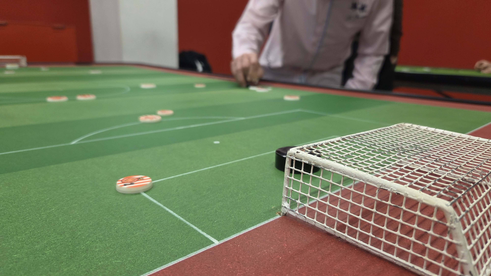
Senzill d'entendre.
Difícil de dominar.
Cada jugador controla un equip de botons sobre un terreny de joc. L'objectiu és construir jugades, superar la defensa rival i marcar gol. La gràcia és en la precisió del toc, la col·locació i la lectura tàctica del partit.
Camp, porteries, pilota i equips preparats per competir.
Els botons es desplacen amb tocs precisos per construir la jugada.
Cada acció obre o tanca opcions ofensives i defensives.
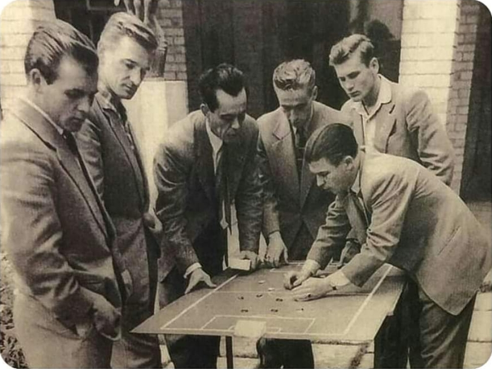
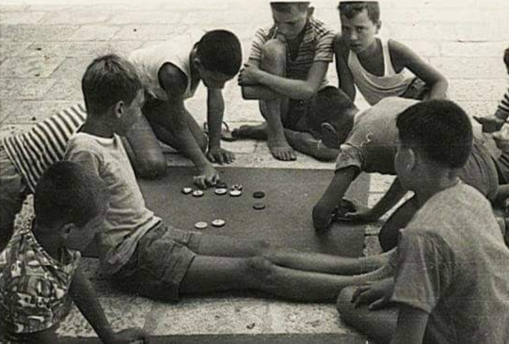
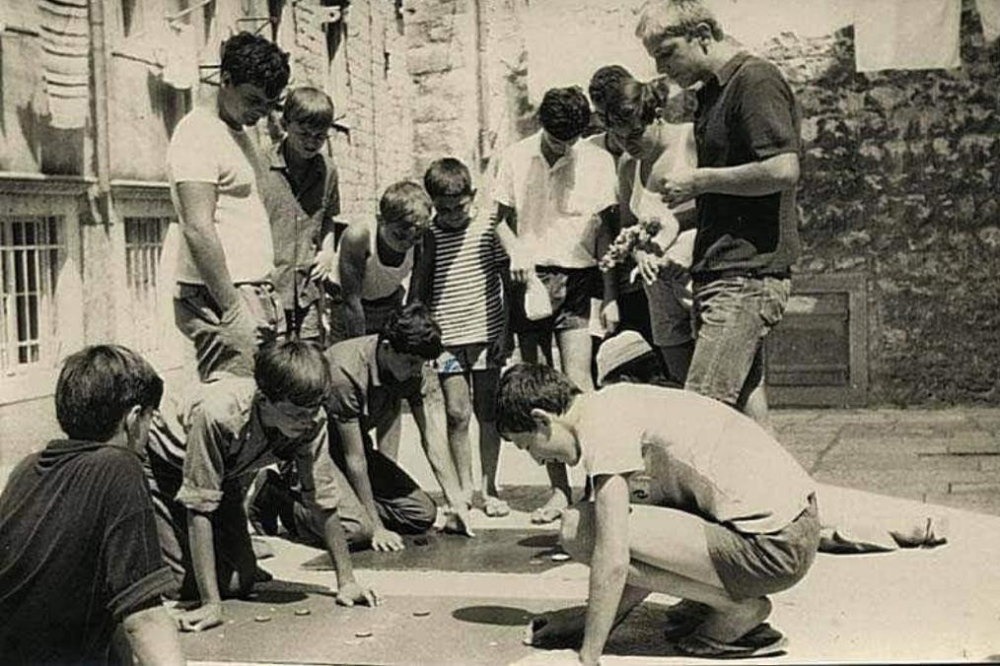
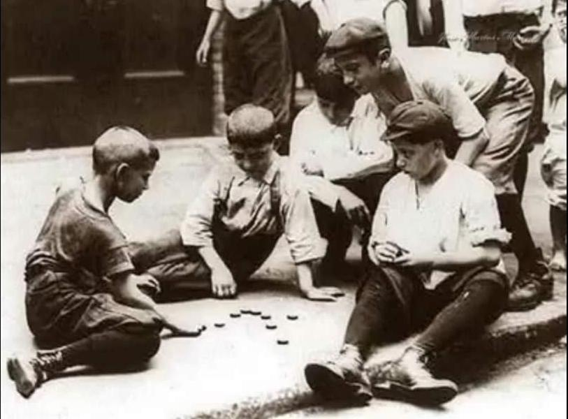
D'una passió popular
a un esport reconegut
El futbol botons és present a Catalunya des dels anys trenta i quaranta del segle passat. Nascut als barris i les escoles, de generació en generació ha evolucionat fins a convertir-se en un esport organitzat amb reconeixement oficial.
Origen popular: botons de merceria i camps de taula improvisats a escoles i llars.
Fundació de l'ACFB, Reus, Osona, Horta i Sant Just. Primeres competicions reglamentades i primera federació catalana.
Expansió territorial: nous clubs a Palautordera, Esplugues, Sant Joan Despí i Barcelona. Federació renovada amb 8 associacions.
Catalunya s'integra a la Federació Internacional de Futbol Taula.
El Parlament de Catalunya reconeix el futbol botons com a esport oficial.
Avui, el futbol botons continua viu gràcies a la tasca constant dels clubs i de les persones que n'han mantingut la pràctica, la memòria i la projecció.
A Catalunya hi ha clubs que
mantenen viu el futbol botons
El futbol botons no és només història: és una activitat viva, amb clubs, associacions i espais on jugar, aprendre i compartir afició. Aquesta xarxa és clau per entendre la seva continuïtat.
Més enllà de cada club:
opens i grans tornejos
Cada club té la seva pròpia lliga i copa interna, a més d'altres competicions pròpies, però també existeixen competicions obertes on els jugadors poden participar com a membres dels seus clubs. És aquí on el futbol botons es connecta a una dimensió més àmplia i compartida.
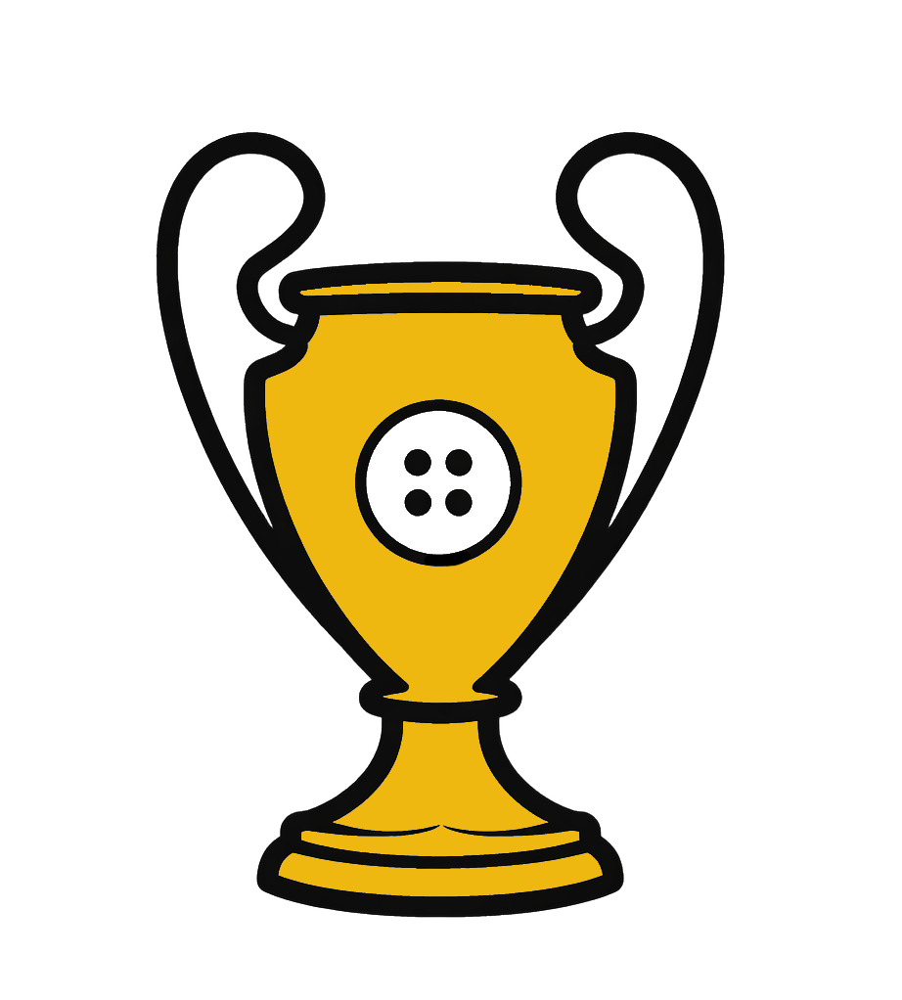
El torneig més prestigiós del futbol botons català.
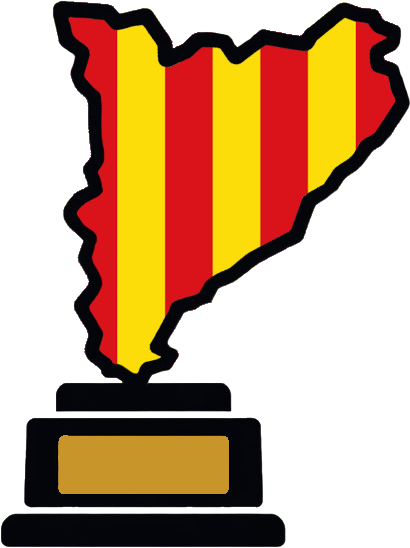
On es decideix qui és el Campió de Catalunya.
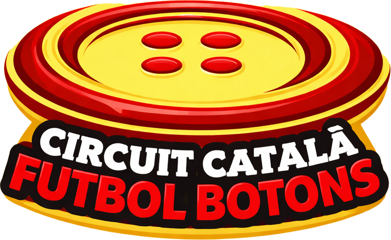
Cadascun dels clubs catalans organitza un torneig anual que connecta clubs i jugadors.
Calendari, classificacions i resultats a
futbolbotons.org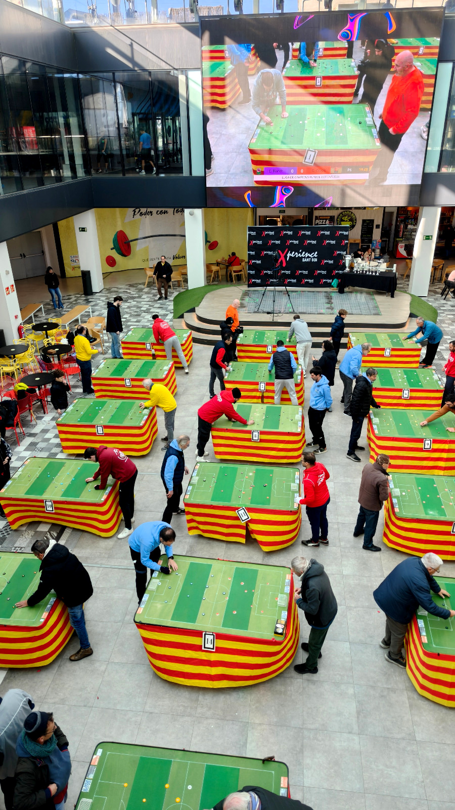
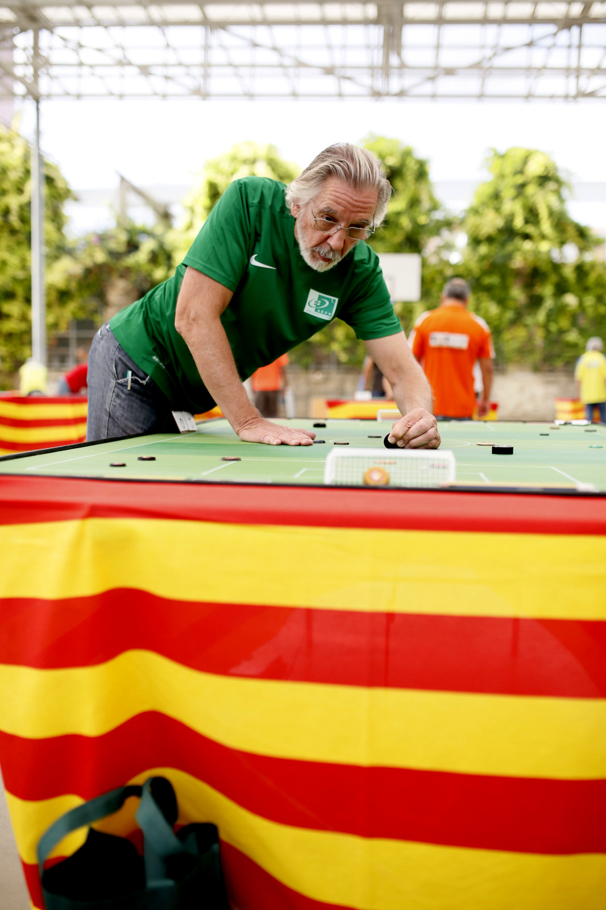
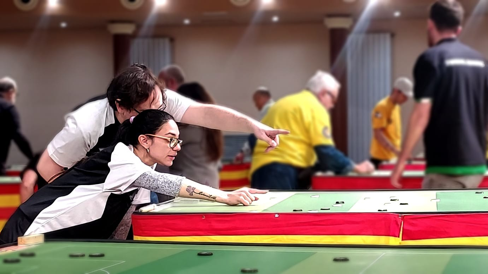
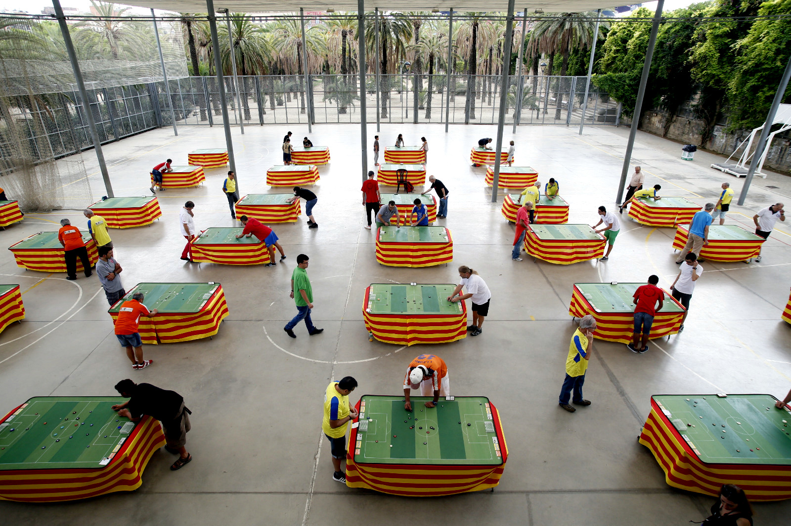
Properes competicions
Consulta les properes jornades, tornejos i esdeveniments del circuit català de futbol botons.
Segueix el futbol botons en línia
Busca el teu club
més proper
Si t'ha despertat la curiositat, el millor pas és acostar-te a un club. Allà és on es viu de veritat: jugant, observant, preguntant i compartint taula amb altres aficionats.
També podràs consultar una futura pàgina de clubs amb localització, contacte i enllaços.